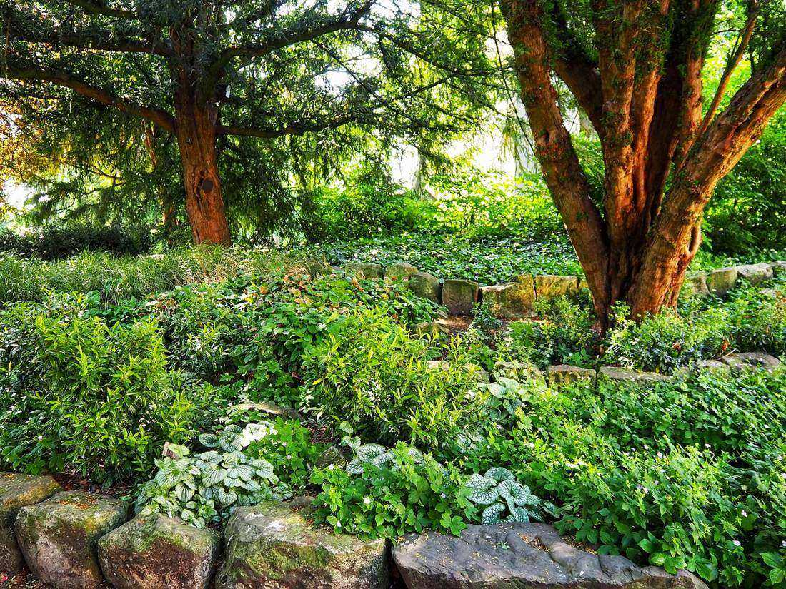
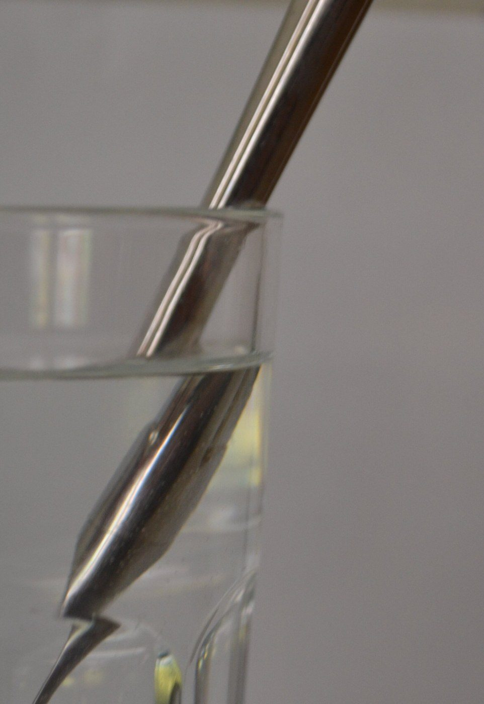

Instagramをのぞいてみたい。行ってみたくなるお店です。
口コミ(イメージ)
声
こんな声が届くかも、という創作です。
以下の3件は、制作側が創作した「想像した声」です。実在のお客様の投稿ではありません。
ゆっくり立ち寄ってみたいベーカリーだと感じています。
Instagramの投稿をひとつずつ見ながら、足を運んでみたくなります。
制作側の創作で、実在のお客様の投稿ではありません。
ギャラリー(イメージ)
花と実りの色を、ひとつずつ。





写真はフリー素材のイメージです。お店のものではありません。